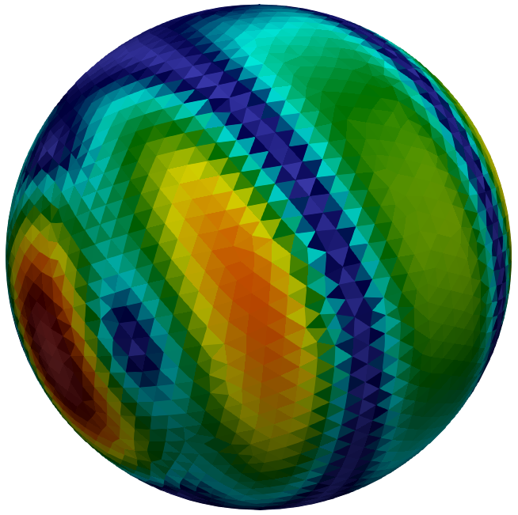
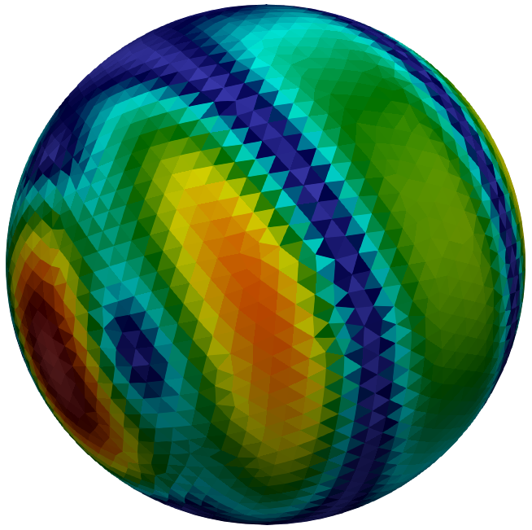

General Usage
The fundamental approach, which applies in most cases is:
- Define trial and test functions.
- Define an operator and an excitation.
- Assemble the system matrix and the right-hand side
The available basis functions and corresponding geometry representations, available operators, and excitations are defined in the corresponding sections of this documentation.
Introductory Example: EFIE
The fundamental procedure is exemplified for the electric field integral equation (EFIE); further common steps are discussed afterwards:
using CompScienceMeshes
using BEAST
# --- 1. basis functions
Γ = meshsphere(1.0, 2.5) # triangulate sphere of radius one
RT = raviartthomas(Γ) # define basis functions
# --- 2. operators & excitation
𝑇 = Maxwell3D.singlelayer(wavenumber=2.0) # integral operator
𝐸 = Maxwell3D.planewave(direction=x̂, polarization=ẑ, wavenumber=2.0) # excitation
𝑒 = (n × 𝐸) × n # tangential part
# --- 3. compute the RHS and system matrix
e = assemble(𝑒, RT) # assemble RHS
T = assemble(𝑇, RT, RT) # assemble system matrixMatrix{ComplexF64} (alias for Array{Complex{Float64}, 2})Explanation
The example follows the 3 steps. Specifically, in the example trial and test functions are the same (Raviart-Thomas), the excitation is a plane wave, and the operator is the Maxwell single layer operator.
The assemble function is the key function of this package, it accepts either excitation + test function or operator + test + trial function.
The operator can also be a linear combination of several operators.
BEAST.assemble — Functionassemble(operator, test_functions, trial_functions;
storage_policy = Val{:bandedstorage},
threading = Threading{:multi},
quadstrat=defaultquadstrat(operator, test_functions, trial_functions))Assemble the system matrix corresponding to the operator operator tested with the test functions test_functions and the trial functions trial_functions.
assemble(fn, tfs)Assemble the vector of test coefficients corresponding to functional fn and test functions tfs.
Further Common Steps
The linear system of equations can now, for example, be solved via the iterative GMRES solver of the Krylov.jl package. However, other solver could be used. Subsequently, different post-processing steps can be conducted, such as computing the scattered field from the determined expansion coefficients.
Key functions for the post-processing are the potential and facecurrents functions.
This is shown in the following:
using Krylov
# --- solve linear system iteratively
u, ch = Krylov.gmres(T, -e, rtol=1e-5)
# --- post processing: compute scattered electric field at two Cartesian points
points = [[3.0, 4.0, 2.0], [3.0, 4.0, 3.0]]
EF = potential(MWSingleLayerField3D(gamma=im*2.0), points, u, RT)2-element Vector{StaticArraysCore.SVector{3, ComplexF64}}:
[-0.04271407814368289 + 0.03379976410431987im, -0.032803047092367504 - 0.05507067940187145im, 0.08494728520172994 + 0.08235567974914393im]
[0.004490738682106283 + 0.06685903108113175im, -0.07059961156300687 - 0.012706984756922581im, 0.0810214764437381 - 0.011893414308742734im]more details
 

Plotting & Exporting
Plotting details.
Export VTK.
...